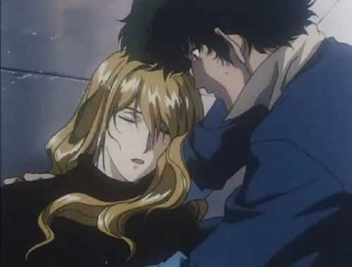

Episode 5: Ballad of Fallen Angels

Neste episódio, Spike enfrenta seu passado ao confrontar o vilão Vicious, este episódio dedica a maior parte de sua segunda metade a uma sequência de ação estendida, mostrando a quantidade de cuidado e perigo que pode ser comunicado, ao mesmo tempo em que aumenta as apostas na série como um todo. Observar a queda de Spike através de vitrais enquanto “Green Bird” de Yoko Kanno toca ao fundo é um sinal de parte do peso com o qual o show vai lidar e um aviso antecipado para o tom e a intenção geral.
Episode 10: Ganymede Elegy

Um episódio tranquilo e triste, que gira em torno de Jet se reunindo com sua namorada Alisa, que o deixou muitos anos antes (esta não é uma série romântica), apenas para descobrir que sua nova vida a coloca em sua mira como uma caçadora de recompensas. Mesmo para os padrões do programa, é um episódio maduro centrado na perda, seguindo em frente e entendendo as distâncias entre as pessoas.
Episode 26: The Real Folk Blues (Part 2)
Um final para Spike e Vicious, os episódios finais exploram não apenas o que significa lidar com seu passado, mas ser incapaz de seguir em frente e todas as consequências que isso traz. É um final emocionante que termina com cinco palavras que ecoam para qualquer fã da série, agora mais do que nunca: você vai carregar esse peso.